คู่มือการเตรียมระบบและติดตั้ง EA
(Step-by-Step Guide)
TECHNICAL INSTALLATION & CONFIGURATION
🛡️ 1. หลักการคิดและความปลอดภัยก่อนเริ่มใช้งาน (Philosophy & Risk Protocol)
"ยินดีต้อนรับสู่ศูนย์ข้อมูลเชิงเทคนิคของ BugTraderYai" หน้าเอกสารฉบับนี้คือ Protocol ในการบริหารจัดการความเสี่ยงเชิงระบบอย่างยั่งยืน
เราทำหน้าที่เป็น “เกราะป้องกันทางความคิด” (Mental Safety Layer) เพื่อช่วยคัดกรองทัศนคติและสร้างความเข้าใจที่ถูกต้องให้แก่ผู้ใช้งานก่อนเข้าสู่ตลาดจริง
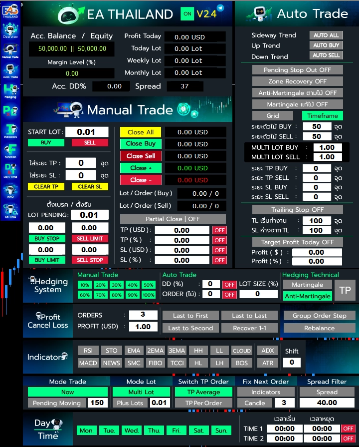
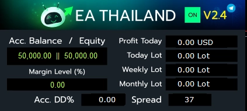
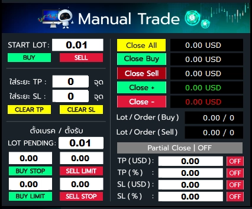
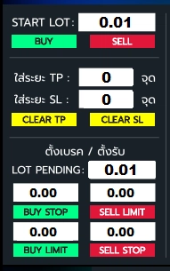
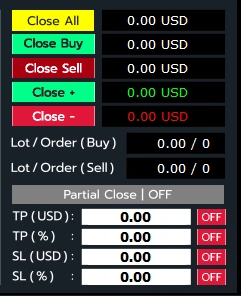
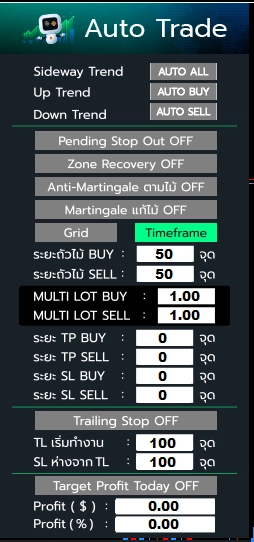
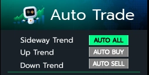
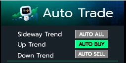
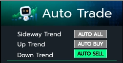
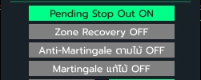
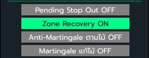
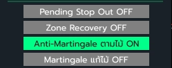
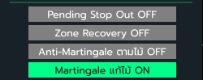
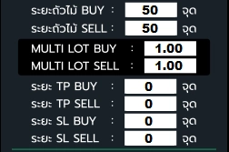
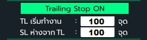
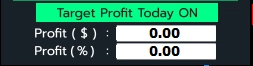
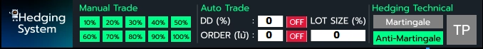
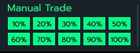
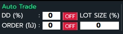
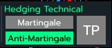
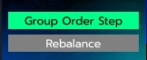
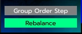
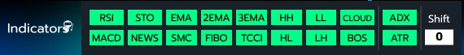
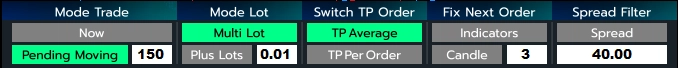
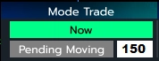
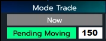
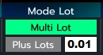
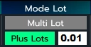
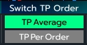
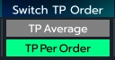
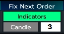
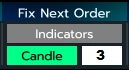
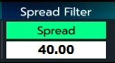
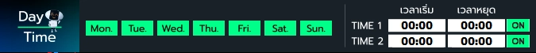
📝 ใส่ระยะ TP : ระยะ TP เป็นจุด
📝 ใส่ระยะ SL : ระยะ SL เป็นจุด
📝 Clear TP : ลบล้างเส้น TP ออก
📝 Clear SL : ลบล้างเส้น SL ออก
📝 Close Buy : ปิดออเดอร์ buy ทั้งหมด
📝 Close Sell : ปิดออเดอร์ sell ทั้งหมด
📝 Close + : ปิดออเดอร์ ที่บวกอยู่ทั้งหมด
📝 Close - : ปิดออเดอร์ ที่ติดลบอยู่ทั้งหมด
📝 Lot/Order (Buy) : จำนวน Lot Buy รวมที่มีทั้งหมด / จำนวนออเดอร์ที่มีทั้งหมด
📝 Lot/Order (Sell) : จำนวน Lot Sell รวมที่มีทั้งหมด / จำนวนออเดอร์ที่มีทั้งหมด
📝 Partial Close : ใช้คู่กับด้านล่างนี้ เมื่อถึงเป้าแล้วจะหักปิดครึ่ง
📝 TP (USD) : ระบุตัวเลขเป้าที่ต้องการ ถ้าเป็นบัญชี USC ก็คิดเป็น USC
📝 TP (%) : ระบุตัวเลข % ของพอร์ตรวม
📝 SL (USD) : ระบุตัวเลขเป้าที่ต้องการ ถ้าเป็นบัญชี USC ก็คิดเป็น USC
📝 SL (%) :ระบุตัวเลข % ของพอร์ตรวม
ถ้าเลือกใช้งาน indicotars ก็ต้องรอสัญญาณก่อนถึงจะออกไม้
ถ้าเลือกใช้งาน indicotars ก็ต้องรอสัญญาณก่อนถึงจะออกไม้
ถ้าเลือกใช้งาน indicotars ก็ต้องรอสัญญาณก่อนถึงจะออกไม้
📝 Multi Lot : กำหนดตัวคูณไม้ ว่าไม้ถัดไปอยากให้ขนาด lot เพิ่มมาเท่าไหร่
📝 ระยะ TP SL : กำหนดระยะที่ต้องการ นับเป็นจุด
📝 TL เริ่มทำงาน : เมื่อกราฟไปถูกทางกี่จุด กำหนดระยะไว้ เพื่อให้มีเส้น SL เกิดขึ้นมา
📝 SL ห่างจาก TL : เป็นระยะที่จะให้เส้น SL ว่าหลังจากผ่าน TL ไปแล้วกี่จุด ให้นับจากราคาปัจจุบัน มาตามระยะที่กำหนด
📝 Profit ( $ ): กำหนดเป็นจำนวน
📝 Profit ( % ): กำหนดเป็น % ของพอร์ต
📝 DD( % ): กำหนด % ไว้ เมื่อพอร์ตตบลบถึง % ที่กำหนด จะออก Lotsize เป็น % ที่ตั้งค่าไว้
📝 Order( ไม้ ): กำหนดจำนวนไม้ไว้ เมื่อออเดอร์แก้ไม้ไปถึงจำนวนที่กำหนด จะออก Lotsize เป็น % ที่ตั้งค่าไว้
📝 Lot Size( % ):กำหนดจำนวน lot ที่จะออกตาม % ที่มี lot รวมอยู่ในขณะนั้น
📝 Hedging Martingale : ไม้ Hedging เมื่อ ผิดทาง จะออกไม้แก้ออกมา
📝 Hedging Anti-Martingale : ไม้ Hedging เมื่อ ถูกทาง จะออกไม้แก้ออกมา
📝 TP : เมื่อเปิดใช้งาน จะสร้าง TP ของฝั่ง Hedging ออกมา
📝 Orders : กำหนดจำนวนออเดอร์ เมื่อถึงกำหนดระบบจะเริ่มจับปิดคู่
📝 Profet (USD) : เป้าที่ต้องการหักปิดจับคู่ เมื่อระบบเริ่มทำงานจับคู่ปิดแล้ว จะปิดตามเป้าที่กำหนด
📝 Last to First : นำเอาไม้สุดท้าย มาจับคู่ปิดกับไม้แรก
📝 Last to Second : นำเอาไม้สุดท้าย มาจับคู่ปิดกับไม้ที่สอง
📝 Last to Last : นำเอาไม้สุดท้าย มาจับคู่ปิดกับไม้รองสุดท้าย
📝 Recover 1-1 : ระบบจะหักออกทันที่ที่ มีจับคู่ได้ ทุกฝั่ง
⚙️ 2. ขั้นตอนการติดตั้งและเตรียมความพร้อมของระบบ (System Implementation)
การเริ่มต้นใช้งานระบบภายใต้การดูแลของ BugTraderYai จะให้ความสำคัญกับการปรับจูนทัศนคติเรื่องความเสี่ยงเป็นลำดับแรก